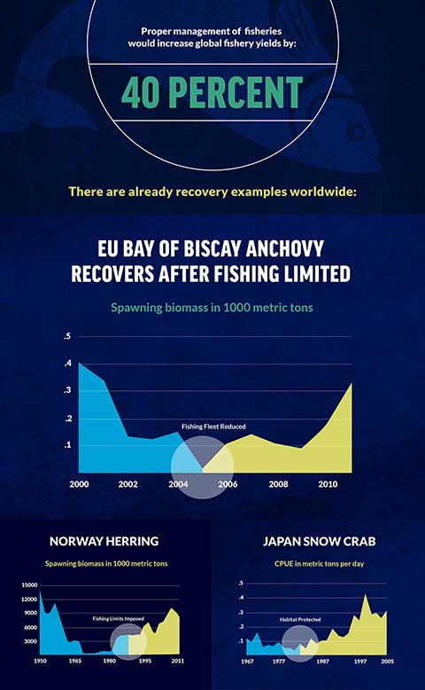
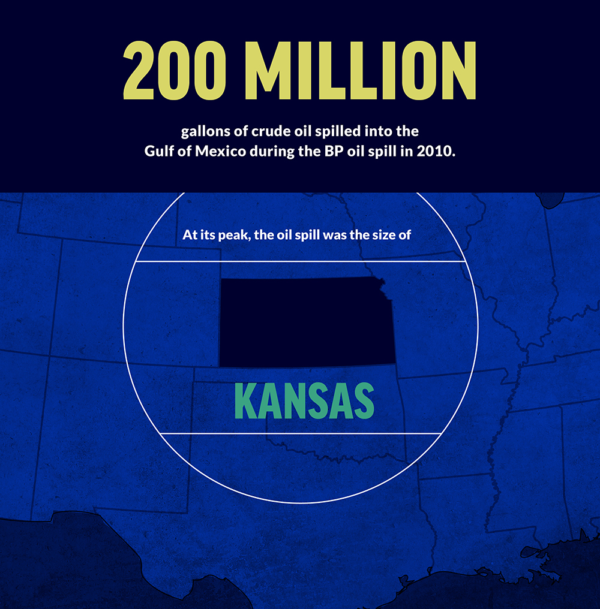
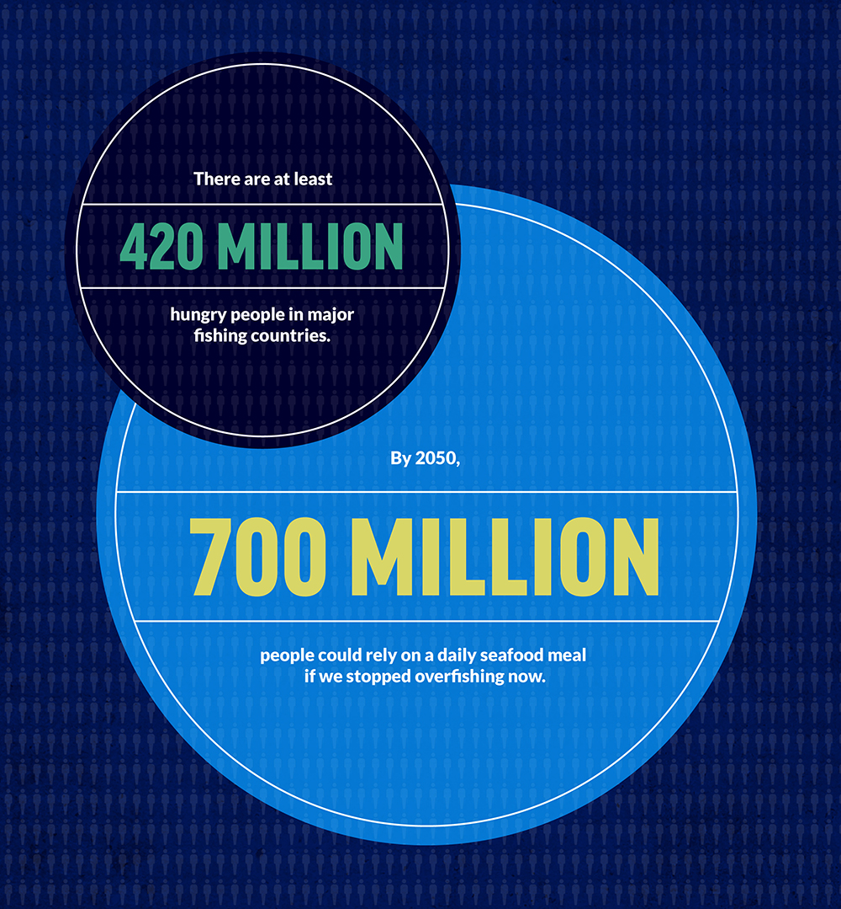
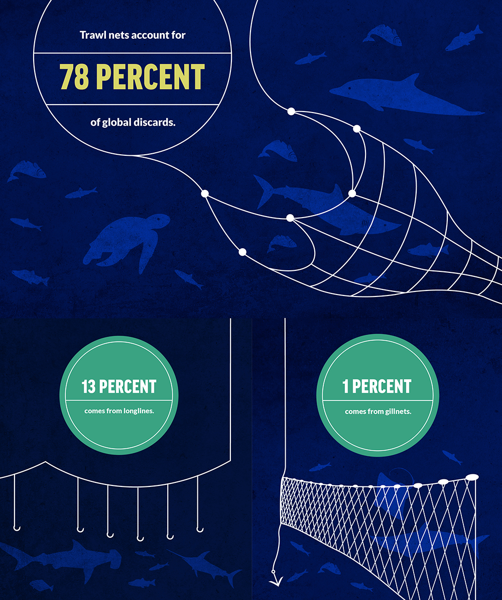

vision
Save Our Oceans seeks to make our oceans as rich, healthy, and abundant as they once were.
problem
The oceans are vast, but they are not immune to human influence. We have already altered or destroyed marine ecosystems and driven million-year-old species to the brink of extinction. According to a study published in Science, less than 4 percent of the oceans remain unaffected by human activity.
solution
This website was created to identify practical solutions and make them happen. The good news is that we can restore the oceans to their former glory. We are campaign-driven, fact-based, and multi-disciplinary and expert.
we are taking too many fish out of the water.
Overfishing threatens ocean ecosystems and our livelihoods.
we are polluting our oceans.
Mercury, antibiotics, oil, and climate-changing gasses threaten marine wildlife, habitat, and human health.
we are squandering potential sources of food.
Seafood has the potential to sustainably feed millions of hungry people.
we are trashing marine wildlife and special places.
Destructive and wasteful fishing practices threaten animals and damage the seafloor.
